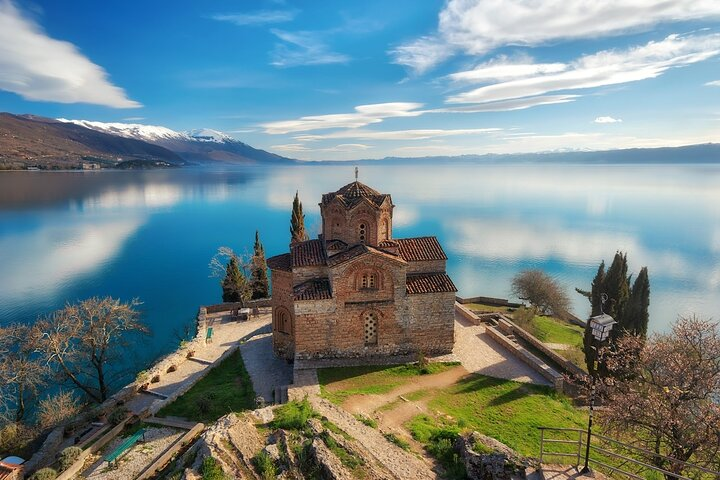

Одговори на следните прашања за да го провериш своето знаење за Охрид.
1. Колку цркви има во Охрид, според легендата „еден ден – една црква“?
2. Кој фестивал се одржува во Охрид секоја година?
3. Која река се влева во Охридското Езеро?
4. Кој охридски занает е традиционален и познат за сувенири?
5. Кој светец е поврзан со лекувањето на очите во Охрид?